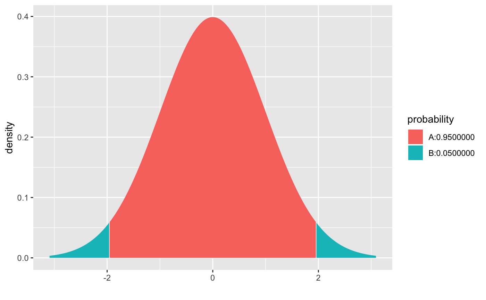
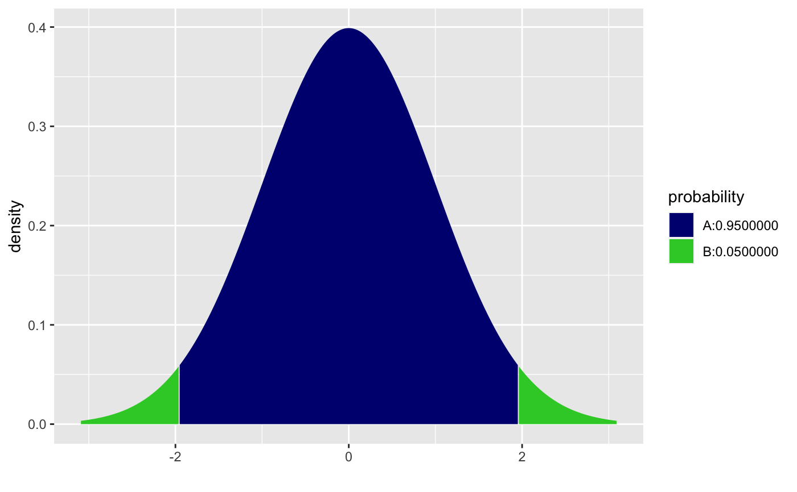
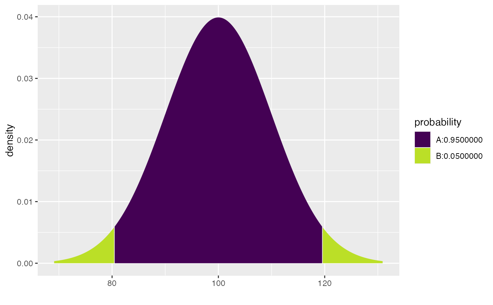

These versions of the quantile functions take a vector of central probabilities as its first argument.
cnorm(p, mean = 0, sd = 1, log.p = FALSE, side = c("both", "upper", "lower")) ct(p, df, ncp, log.p = FALSE, side = c("upper", "lower", "both"))
| p | vector of probabilities. |
|---|---|
| mean | vector of means. |
| sd | vector of standard deviations. |
| log.p | logical; if TRUE, probabilities p are given as log(p). |
| side | One of "upper", "lower", or "both" indicating whether a vector of upper or lower quantiles or a matrix of both should be returned. |
| df | degrees of freedom (\(> 0\), maybe non-integer). |
| ncp | non-centrality parameter \(\delta\);
currently except for |
qnorm(.975)#> [1] 1.959964cnorm(.95)#> lower upper #> [1,] -1.959964 1.959964xcnorm(.95)#>#>#>#>#>#> [1] -1.959964 1.959964xcnorm(.95, verbose = FALSE, return = "plot") %>% gf_refine( scale_fill_manual( values = c("navy", "limegreen")), scale_color_manual(values = c("black", "black")))#> #>#> #>cnorm(.95, mean = 100, sd = 10)#> lower upper #> [1,] 80.40036 119.5996#>#>#>#>#>#> [1] 80.40036 119.59964